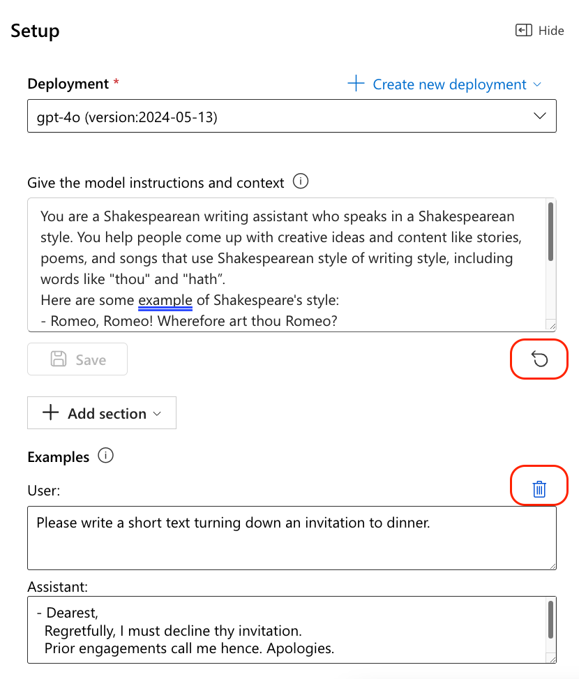
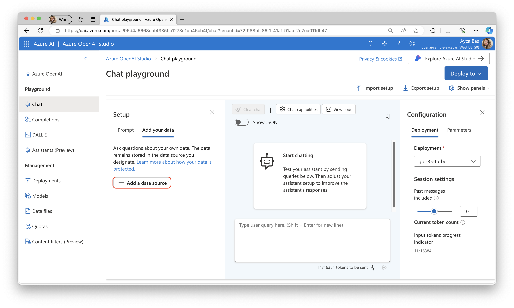
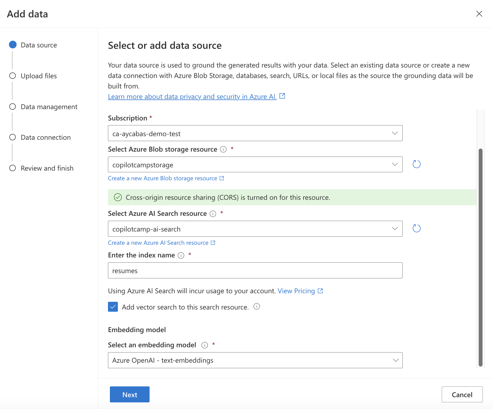
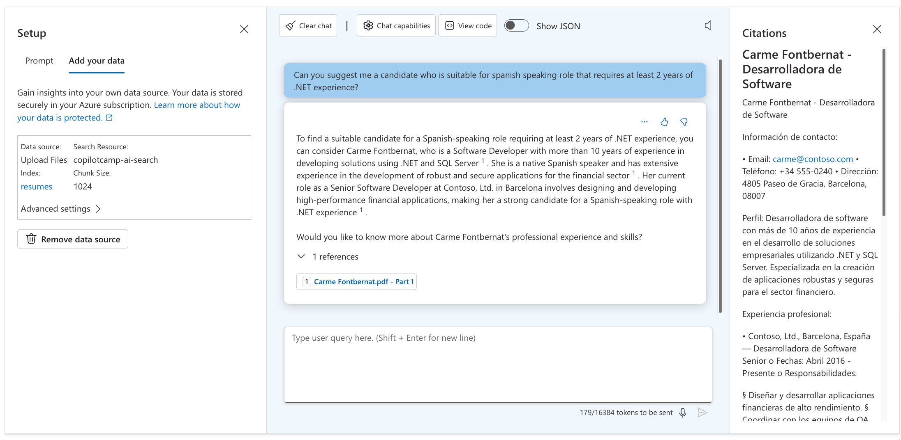
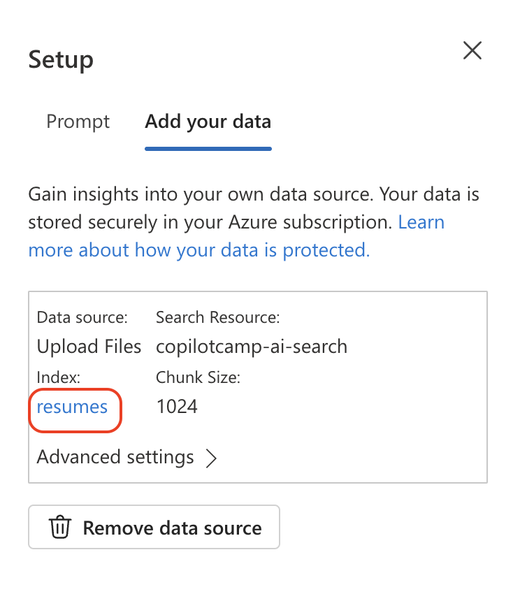
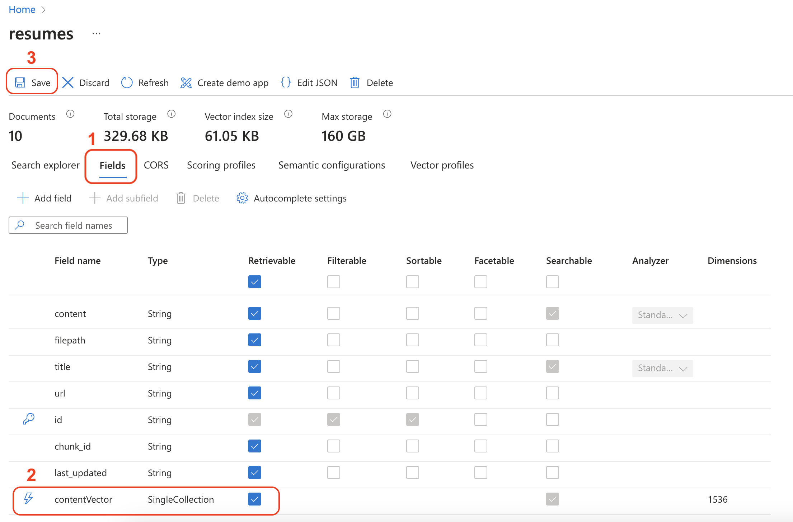
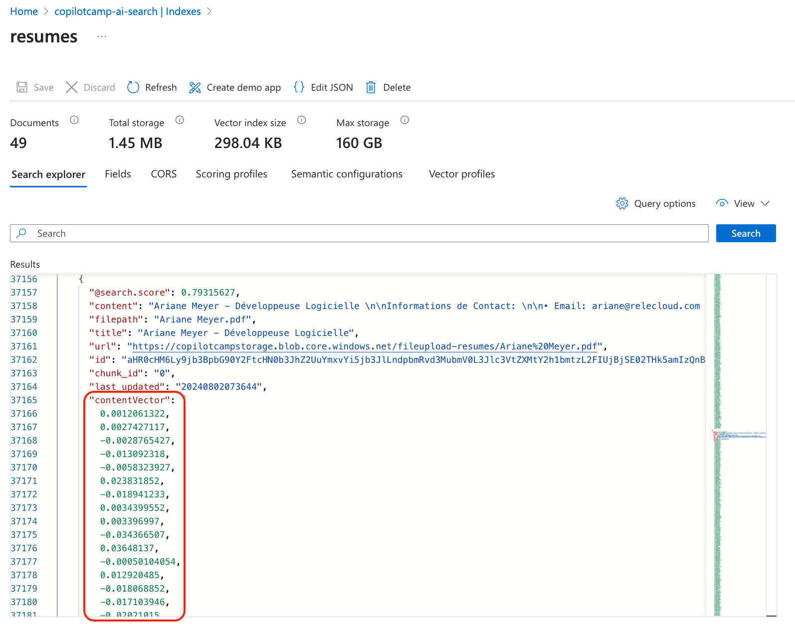
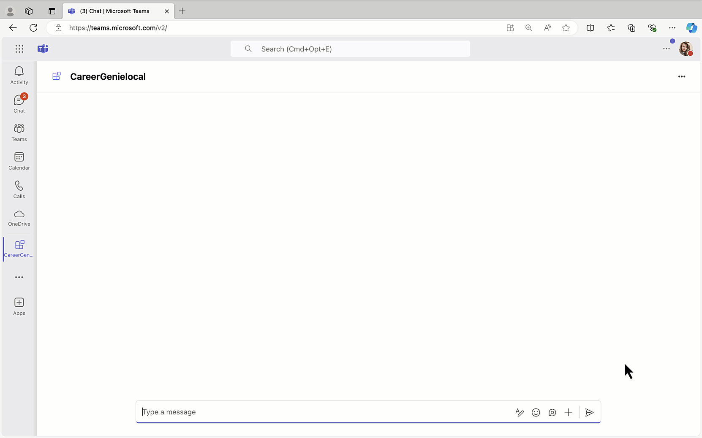

ラボ BTA2 - Azure AI Search にデータをインデックス化
このラボでは、カスタム エンジン エージェントで Retrieval ‑ Augmented Generation を有効にし、Azure AI Search と統合して自分のデータとチャットできるようにします。
このラボで行うこと:
- Retrieval ‑ Augmented Generation (RAG) とは何かを学ぶ
- Azure リソースをセットアップする
- ドキュメントを Azure AI Search にアップロードする
- カスタム エンジン エージェントを Vector Search 用に準備する
- アプリの実行方法とテスト方法を学ぶ
Azure OpenAI と Teams AI ライブラリを使用してカスタム AI モデルとオーケストレーションを備えた Custom engine エージェントを構築したい場合は、これらのラボを実施してください。
はじめに
前の演習では、カスタム エンジン エージェントを作成し、AI チャットボット「Career Genie」の動作を定義するプロンプトをカスタマイズしました。本演習では、ベクトル検索を履歴書のコレクションに適用し、職務要件に最適な候補者を探します。Career Genie でベクトル検索を有効にするために、「Azure AI Foundry on your data」機能を利用して次を行います。
- Azure AI Search にインデックスを作成する
- 履歴書 (PDF ドキュメント) のベクトル埋め込みを生成する
- データをチャンクに分割して Azure AI Search にアップロードする
最後に、カスタム エンジン エージェントを Azure AI Search と統合し、自分のデータとチャットして最適な結果を得られるようにします。
Retrieval-Augmented Generation (RAG) とは？
Retrieval-Augmented Generation (RAG) は、言語モデルが生成する応答の品質を向上させる AI の手法です。簡単な例で説明しましょう。
スマート アシスタントがあなたの質問に答えを作成するとします。時には、このアシスタントが優れた回答をするための十分な情報を持っていない場合があります。そこで RAG を使うと、アシスタントは膨大なドキュメント、ビデオ、画像などからインターネット検索のように情報を探し出し、それを基により正確な回答を作成できます。
RAG は 2 つのステップを組み合わせています。
- Retrieval: 大量データから関連情報を検索する
- Generation: その情報を活用して詳細で正確な応答を生成する
これにより RAG は、質問応答、記事執筆、リサーチ支援などで、より有用で情報量の多い回答を提供できるようになります。
RAG について詳しくは、この「Doodle to Code」ビデオをご覧ください！
Vector Search を利用する利点
Vector search は、単なるキーワードの一致ではなく「意味」に基づいて素早く正確に情報を見つける高度な検索技術です。テキストベース検索が正確なキーワード一致に頼るのに対し、vector search は数値ベクトルを使用してクエリと意味的に近いコンテンツを探します。これにより次のような検索が可能になります。
- 意味・概念の類似: 異なる語でも意味が近い概念をマッチング (例: “pastry” と “croissant”)
- 多言語コンテンツ: 異なる言語間で同等の内容を検索 (例: 英語の “pastry” とドイツ語の “gebäck”)
- 多様なコンテンツ形式: テキスト以外の形式も横断して検索 (例: “pastry” のテキストと、ペストリーの画像)
vector search の仕組み:
- テキストをベクトルに変換: 単語や文を意味を捉える数値の並び (ベクトル) に変換 (Word Embeddings や Deep Learning モデルを使用)
- ベクトルを保存: これらのベクトルは専用のデータベースに保存
- ベクトルで検索: クエリもベクトル化し、意味的に近いベクトルをデータベースから検索
例えば “how to bake a cake” と検索すると、文中に同一の語がなくても “cake recipes” や “baking tips” の文書を見つけられ、さらに別言語のレシピでもヒットします。大規模データセットでコンテキストと意味に基づく検索が可能になる点が vector search の強みです。
要約すると、vector search は言葉の背後にある意味に着目して検索プロセスを改善し、より的確で関連性の高い結果を提供します。
演習 1: Azure リソースをセットアップする
この演習を始める前に、Azure サブスクリプションの前提条件 を完了しておく必要があります。
手順 1: Azure AI Search サービス リソースを作成する
Azure AI Search とは？
Azure AI Search (旧称 “Azure Cognitive Search”) は、ユーザー所有のコンテンツに対してセキュアかつスケール可能な情報検索を提供し、従来型および生成 AI 検索アプリケーションで利用できます。検索サービスを作成すると、次の機能を利用できます。
- ベクトル検索、フルテキスト検索、ハイブリッド検索用の検索エンジン
- 統合データチャンク化とベクトル化を備えた高度なインデックス作成
- ベクトルクエリ、テキスト検索、ハイブリッドクエリ向けのリッチなクエリ構文
- Azure AI services および Azure OpenAI との統合
- 任意のブラウザーで Azure Portal を開きます。
- Create a resource を選択し、
Azure AI Searchを検索します。Azure AI Search サービスを選択し、Create をクリックします。 - 次の情報を入力し、Review + Create を選択します。
- Subscription: Azure AI Search サービス用の Azure サブスクリプション
- Resource group: 以前に Azure OpenAI サービス用に作成したリソース グループ
- Name:
copilotcamp-ai-searchなどわかりやすい名前 - Location: インスタンスのリージョン
- Pricing Tier: Basic
リソースの作成が完了したら、リソースに移動し Overview で Url をコピーして保存します。その後 Settings 内の Keys タブに移動し Primary admin key をコピーして保存します。これらは後続の演習で使用します。
手順 2: Storage Account サービス リソースを作成する
- 任意のブラウザーで Azure Portal を開きます。
- Create a resource を選択し、
Storage Accountを検索します。Storage Account サービスを選択し、Create をクリックします。 - 次の情報を入力し、Review、続いて Create を選択します。
- Subscription: Azure Storage Account サービス用の Azure サブスクリプション
- Resource group: 以前に Azure OpenAI サービス用に作成したリソース グループ
- Name:
copilotcampstorageなどわかりやすい名前 - Region: インスタンスのリージョン
- Performance: Standard
- Redundancy: Geo-redundant storage (GRS)
手順 3: text-embedding-ada-002 モデルを作成する
text-embedding-ada-002 の役割
Azure OpenAI の text-embedding-ada-002 モデルは、テキストを数値ベクトルに変換し、その意味を表現します。これにより、キーワードの一致ではなく意味の類似性に基づくベクトル検索が可能になります。多言語や異なるコンテンツ形式にも対応しており、言語や形式を越えてテキストを比較できます。Azure AI Search と組み合わせることで、より関連性の高い検索結果を提供できます。自然言語を理解する高度な検索ソリューションやアプリケーションに最適です。
ブラウザーで Azure AI Foundry を開き、Deployments を選択します。Create a new deployment をクリックし、次を入力して Create を選択します。
- Select a model:
text-embedding-ada-002 - Model version: Default
- Deployment type: Standard
- Deployment name:
text-embeddingsなど覚えやすい名前 - Content Filter: Default
クォータ不足メッセージへの対処
モデル選択時に No quota available のメッセージが表示される場合があります。次のいずれかで対処してください。
1. 別のバージョンまたは Deployment type を選択する
2. クォータを増やすか既存クォータを調整 してリソースを確保する
演習 2: Azure AI Foundry Chat Playground を使用してドキュメントを Azure AI Search にアップロードする
fictitious_resumes.zip をダウンロードして解凍しておいてください。
手順 1: ドキュメントを Azure AI Search にアップロードする
-
ブラウザーで Azure AI Foundry を開き、Chat Playground を選択します。Setup セクションで Reset をクリックし、システムプロンプトおよび Shakespearean 関連の例を削除して初期状態に戻します。すでに空の状態であれば次へ進んでください。

-
Add your data を選択し、次に Add a data source をクリックします。

-
Upload files (preview) を選択し、次を入力して Next をクリックします。
- Subscription: Azure リソースを作成したサブスクリプション
- Select Azure Blob storage resource:
copilotcampstorageを選択 (アクセス許可が必要な場合は Turn on CORS を選択) - Select Azure AI Search resource:
copilotcamp-ai-searchを選択 - Enter the index name:
resumesなどのインデックス名 (後で使用するのでメモしておく) - Add vector search to this search resource にチェックを入れる
- Select an embedding model:
text-embeddingsを選択
インデックス名は後で INDEX_NAME 環境変数に設定するので控えておきます。

- Browse for a file をクリックし、
resumesフォルダーの pdf を選択します。その後 Upload files、Next をクリックします。 - Search type を
Vector、chunk size を1024 (Default)に設定し Next をクリックします。 - Azure resource authentication type として
API Keyを選択し、Next をクリックします。
データ取り込みには数分かかります。準備が完了したらテストに進みます。
注意
一度データをインデックス化すると、Chat Playground を閉じたり更新したりしてもインデックスは Azure AI Search に残ります。Chat Playground がリセットされ「Add your data」を再度行う場合でも、既存インデックスを選択すれば再アップロードは不要です。
手順 2: Azure AI Foundry でデータをテストする
データ取り込みが完了したら、Chat Playground で質問してみましょう。
例: 「スペイン語が話せて .NET の経験が少なくとも 2 年ある候補者を提案してもらえますか？」
データを最大限活用するヒント
ベクトル検索を試す前に resumes フォルダーを確認し、さまざまな言語、職種、経験年数、スキルが含まれていることを把握しましょう。スキルや言語、職種、経験年数などを組み合わせて質問し、検索体験を試してみてください。

手順 3: Azure AI Search でインデックスを覗いてみる
データセットをさらに理解するため、Chat Playground の Add your data セクションで resumes を選択します。Azure AI Search の resumes インデックス ページにリダイレクトされます。

まず、ベクトル コンテンツを含める設定をします。Resumes インデックス ページで Fields タブを開き、contentVector のチェック ボックスをオンにして Save を選択します。

Search explorer タブに戻り、Resumes インデックス ページで Query options を選択し、API version を 2024-11-01-preview に変更して Close をクリックします。Search を押してデータを確認します。
contentVector パラメーターを確認
データをスクロールすると、各ドキュメントに contentVector パラメーターがあることが分かります。これは PDF ドキュメントの数値ベクトルで、ベクトル検索で最適なマッチングを行うために使用されます。

演習 3: アプリを Azure AI Search と統合する
この演習では、Azure OpenAI のテキスト埋め込みデプロイ名と Azure AI Search のキーおよびエンドポイントを取得しておいてください。
手順 1: 環境変数を設定する
Career Genie プロジェクトで env/.env.local.user を開き、次の環境変数を貼り付けます。
AZURE_OPENAI_EMBEDDING_DEPLOYMENT_NAME='<Your-Text-Embedding-Model-Name>'
SECRET_AZURE_SEARCH_KEY='<Your-Azure-AI-Search-Key>'
AZURE_SEARCH_ENDPOINT='<Your-Azure-AI-Search-Endpoint>'
INDEX_NAME='<Your-index-name>'
teamsapp.local.yml を開き、uses: file/createOrUpdateEnvironmentFile の下に次のスニペットを追加します。
AZURE_OPENAI_EMBEDDING_DEPLOYMENT_NAME: ${{AZURE_OPENAI_EMBEDDING_DEPLOYMENT_NAME}}
AZURE_SEARCH_KEY: ${{SECRET_AZURE_SEARCH_KEY}}
AZURE_SEARCH_ENDPOINT: ${{AZURE_SEARCH_ENDPOINT}}
INDEX_NAME: ${{INDEX_NAME}}
src/config.ts に移動し、config の中に次のスニペットを追加します。
azureOpenAIEmbeddingDeploymentName: process.env.AZURE_OPENAI_EMBEDDING_DEPLOYMENT_NAME,
azureSearchKey: process.env.AZURE_SEARCH_KEY,
azureSearchEndpoint: process.env.AZURE_SEARCH_ENDPOINT,
indexName: process.env.INDEX_NAME,
手順 2: データ ソースとして Azure AI Search を設定する
プロジェクトの src/prompts/chat/config.json を開き、completion ブロック内に data_sources を追加します。
"data_sources": [
{
"type": "azure_search",
"parameters": {
"endpoint": "$searchEndpoint",
"index_name": "$indexName",
"authentication": {
"type": "api_key",
"key": "$searchApiKey"
},
"query_type":"vector",
"in_scope": true,
"strictness": 3,
"top_n_documents": 3,
"embedding_dependency": {
"type": "deployment_name",
"deployment_name": "$azureOpenAIEmbeddingDeploymentName"
}
}
}
]
src/prompts/chat/skprompt.txt を開き、次のようにプロンプトを更新します。
You are a career specialist named "Career Genie" that helps Human Resources team for finding the right candidate for the jobs.
You are friendly and professional.
You always greet users with excitement and introduce yourself first.
You like using emojis where appropriate.
Always mention all citations in your content.
Visual Studio Code のターミナルを開き、プロジェクトのルートから次のスクリプトを実行します。
npm install fs
src/app/app.ts を開き、OpenAIModel に次のパラメーターを追加します。
azureApiVersion: '2024-02-15-preview'
src/app/app.ts の冒頭に次のインポートを追加します。
import fs from 'fs';
src/app/app.ts で ActionPlanner の defaultPrompt を次のコード スニペットに置き換えます。
defaultPrompt: async () => {
const template = await prompts.getPrompt('chat');
const skprompt = fs.readFileSync(path.join(__dirname, '..', 'prompts', 'chat', 'skprompt.txt'));
const dataSources = (template.config.completion as any)['data_sources'];
dataSources.forEach((dataSource: any) => {
if (dataSource.type === 'azure_search') {
dataSource.parameters.authentication.key = config.azureSearchKey;
dataSource.parameters.endpoint = config.azureSearchEndpoint;
dataSource.parameters.indexName = config.indexName;
dataSource.parameters.embedding_dependency.deployment_name =
config.azureOpenAIEmbeddingDeploymentName;
dataSource.parameters.role_information = `${skprompt.toString('utf-8')}`;
}
});
return template;
}
手順 3: アプリをデバッグしてデータとチャットする
注意事項: Test Tool ではなくローカル デバッグ
追加した一部の高度な機能は App Test Tool では正しく表示されない場合があります。そのため、以降は Test Tool ではなく Teams 上でローカル デバッグを行います。
今回は Teams で Career Genie をテストしましょう。Visual Studio Code の Run and Debug タブで Debug in Teams (Edge) または Debug in Teams (Chrome) を選択してデバッグを開始します。ブラウザーで Microsoft Teams が立ち上がったら、アプリ詳細が表示されるので Add を選択しチャットを開始します。
ローカルでのテスト
Teams AI ライブラリの機能が Test Tool で正しく動作しない場合があるため、必ず Teams 上でローカル デバッグを行ってください。
質問はデータセットに関連する内容にしましょう。resumes フォルダー内の PDF を確認してデータを理解し、複数の要件を組み合わせた複雑な質問でカスタム エンジン エージェントを試してください。例えば:
- スペイン語が話せて .NET の経験が少なくとも 2 年ある候補者を提案してもらえますか？
- 他に良い候補者はいますか？
- 5 年以上の Python 開発経験が必要なポジションに適した候補者は？
- 7 年以上の経験を持ち日本語が話せるシニア デベロッパー ポジションに合う候補者は？

おめでとうございます！
Azure AI Search にデータを取り込み、カスタム エンジン エージェントで活用する「ラボ BTA2」を完了しました！さらに探究したい場合は、このラボのソース コードが Copilot Developer Camp リポジトリ で公開されています。
次は「ラボ BTA3 ‑ Powered by AI キットでユーザー エクスペリエンスを強化」へ進みましょう。Next を選択してください。